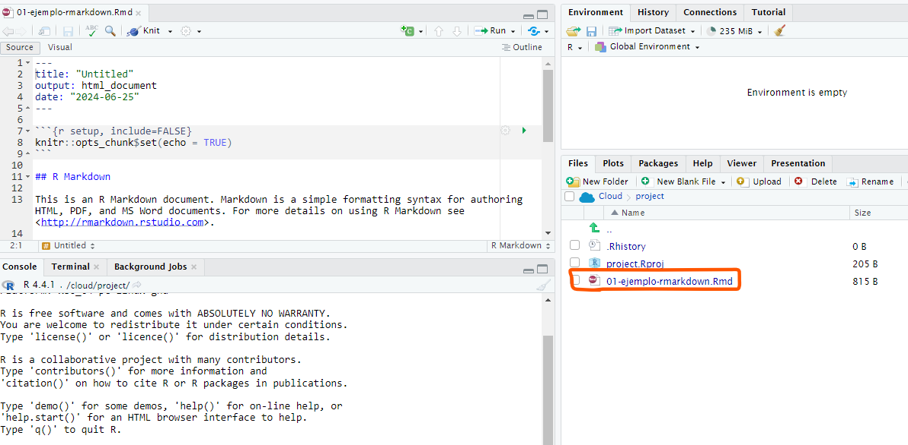
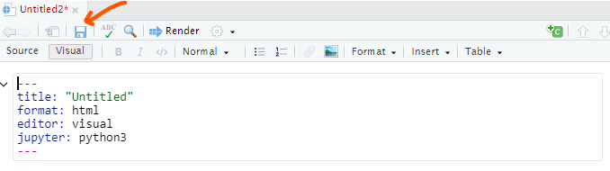

Guías - Herramientas
Herramientas de software
Posit Cloud
- Ingresar a Posit Cloud
- Dar clic en New Project y seleccione la opción New RStudio Project
Aparecerá un cuadro de diálogo indicando que el proyecto se está desplegando.
Podrá editar el nombre de su proyecto en la parte superior izquierda.
Finalmente, para salir del proyecto dar clic en la parte superior derecha encima del nombre de su cuenta y luego dar clic en Log Out.
- Dar clic File → New File → R Markdown
- Si es la primera vez que realiza este proceso (ya sea en la nube de Posit o de forma local en su computador) aparecerá un cuadro de diálogo informando que es necesario instalar y/o actualizar algunas bibliotecas. Dar clic en Yes.
- En la consola (parte inferior izquierda) iniciará el proceso de actualización.
- Cuando el proceso de instalación y/o actualización haya terminado aparecerá una ventana emergente donde podrá ingresar el título, autor y fecha. Por defecto estará seleccionado el formato de salida en HTML, sin embargo, es posible seleccionar PDF o Word. Dar clic en Ok cuando haya ingresado la información requerida.
- Aparecerá una plantilla que siempre tendrá la misma estructura. Borre la información de la plantilla desde el título
## R Markdownhacia abajo, es decir, mantenga solo los metadatos (título, autor y fecha) y el fragmento de código que dice{r setup, inclue=FALSE}.
- Dar clic en el disquete para guardar el archivo. También puede usar las teclas de acceso rápido
CTRL + S.
- Agregue un nombre a su archivo. Recomendación: no use tildes, tampoco la letra
ñy no deje espacios en blanco en el nombre de sus archivos. Dar clic en Save para guardar.
- En la pestaña
Filesde la parte inferior derecha podrá ver que su archivo de extensión.Rmd(R Markdown) está disponible.

- Para exportar su archivo (o varios archivos) seleccione el documento deseado y a continuación dar clic en More → Export.
- Finalmente, dar clic en Download para descargar el archivo. Si selecciona más de un archivo se dará cuenta que se comprimirá en un .zip.
- ¿Cómo compilar el documento HTML? dar clic en la parte superior del editor en la opción Knit o utilice las teclás de acceso rápido
CTRL + SHIFT + K. Al finalizar la compilación podrá notar que hay un nuevo archivo de extensión .html en sus archivos.

- Dar clic File → New File → Quarto Document

- Agregar un título y nombre de autor para el documento. Además, seleccione el motor o kernel (Engine) con el cual desea trabajar, puede ser Knitr para R o Jupyter para Python. Dar clic en Create.
- En caso de seleccionar el kernel de R (Knitr) y si es la primera vez que está ejecutando un documento de Quarto verá un aviso de color amarillo en la parte superior del editor de RStudio, el cual le notificará que es necesario instalar algunas bibliotecas para que funcione de forma correcta. Dar clic en Install y esperar que se instalen las bibliotecas necesarias (ver segunda imagen).
- En caso de seleccionar el kernel de Python (Jupyter) verá que el Kernel automáticamente toma la versión de Python 3. Dar clic en Create. Además, notará que cuando crea el documento aparecerá en los metadatos (parte inicial del documento)
Jupyter: python3(ver segunda imagen). Para garantizar que
- Independientemente de que use R o Python, aparecerá una plantilla que siempre tendrá la misma estructura. Borre la información de la plantilla desde el título
Quartohacia abajo, es decir, mantenga solo los metadatos (título, autor y editor).
- Dar clic en el disquete para guardar el archivo. También puede usar las teclas de acceso rápido
CTRL + S.

- Agregue un nombre a su archivo. Recomendación: no use tildes, tampoco la letra
ñy no deje espacios en blanco en el nombre de sus archivos. Dar clic en Save para guardar.
- En la pestaña
Filesde la parte inferior derecha podrá ver que sus archivos de extensión.qmd(Quarto) están disponibles.
- Para exportar su archivo (o varios archivos) seleccione el documento deseado y a continuación dar clic en More → Export.
- Finalmente, dar clic en Download para descargar el archivo. Si selecciona más de un archivo se dará cuenta que se comprimirá en un .zip.
- ¿Cómo compilar el documento HTML? dar clic en la parte superior del editor en la opción Render o utilice las teclás de acceso rápido
CTRL + SHIFT + K. Al finalizar la compilación podrá notar que hay un nuevo archivo de extensión .html en sus archivos.
- Configuración adicional en Python: se dará cuenta que, cuando intenta renderizar el documento HTML por primera vez desde Quarto con Python, aparecerá un error en la consola informando que no se encuentra el módulo de nombre
yaml. Para solucionar este error debemos instalar la bibliotecajupyter(automáticamente instalará otras dependecias, incluidayaml). Diríjase a la terminal y luego ejecuta el siguiente código presionando la tecla Enter:python3 -m pip install jupyter. Al terminar la instalcación, nuevamente dar clic en Render y se dará cuenta que ahora compila el documento sin ningún problema.
Extensiones recomendadas en Visual Studio Code - Python
- autopep8
- Auto Complete Tag
- autoDocstring - Python Docstring
- Code Runner
- Jupyter
- Jupyter Cell Tags
- Jupyter Keymap
- Jupyter Notebook Renderers
- Jupyter Slide Show
- My Jupyter Notebook Previewer
- Path Autocomplete
- Pylance
- Python
- Python Debugger
- Python Docs
- Python Environment Manager
- Python Path
- Quarto
- VS Code Jupyter Notebook Previewer
Para instalar una extensión en Visual Studio Code puede seguir los siguientes pasos:
- Instalar Visual Studio Code
- Abrir Visual Studio Code
- En la barra lateral izquierda dar clic en Extensions o use las teclas de acceso rápido
CTRL + SHIFT + X
- En el rectángulo de búsqueda escriba el nombre de la extensión que desea instalar.
- Finalmente, notará que las extensiones que no están instaladas aparecerán con un botón que dice Install, dar clic en este botón para instalar la extensión de interés.
Guías
Componentes básicos de Markdown
| Comando | Sintaxis | Ejemplo | Descripción |
|---|---|---|---|
| Título de nivel 1 | # Título de nivel 1 |
# Título de nivel 1 | Crea un título de nivel 1 (el más grande) |
| Título de nivel 2 | ## Título de nivel 2 |
## Título de nivel 2 | Crea un título de nivel 2 |
| Negrita | **texto en negrita** |
texto en negrita | Formatea el texto en negrita |
| Cursiva | *texto en cursiva* |
texto en cursiva | Formatea el texto en cursiva |
| Tachado | ~~texto tachado~~ |
Formatea el texto como tachado | |
| Código en línea | `código en línea` |
código en línea |
Formatea el texto como código en línea |
| Bloque de código | <lenguaje> <br> código <br> |
python <br> print("Hola, mundo!") <br> |
Crea un bloque de código con resaltado de sintaxis |
| Insertar imagen |  |
 |
Inserta una imagen con un texto alternativo |
| Insertar hipervínculo | [texto del enlace](url_del_enlace) |
texto del enlace | Inserta un hipervínculo con un texto personalizado |
| Viñetas | - elemento 1 - elemento 2 |
- elemento 1 - elemento 2 |
Crea una lista con viñetas |
| Numeración | 1. elemento 1 2. elemento 2 |
1. elemento 1 2. elemento 2 |
Crea una lista numerada |
| Cita | > texto de la cita |
> texto de la cita | Crea una cita |
| Línea horizontal | --- |
— | Crea una línea horizontal |